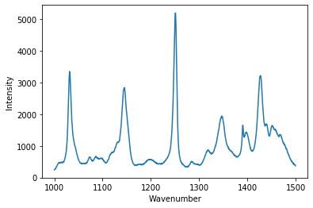
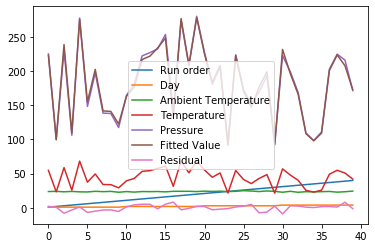
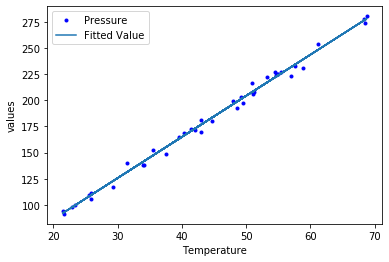
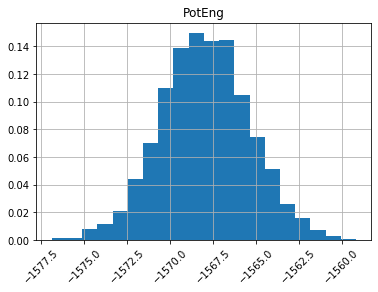
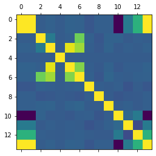
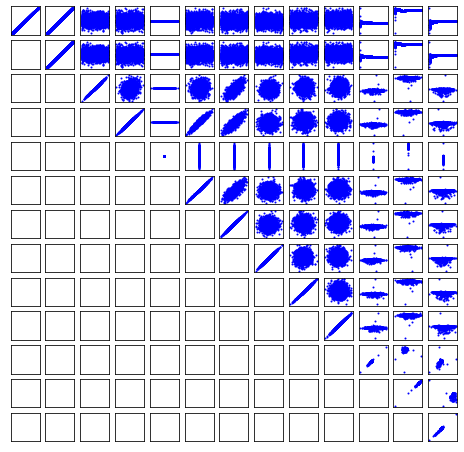

Table of Contents
1 Introduction to Pandas
Before we jump into Pandas, let us review what we have considered so far.
First, we learned how to read data from files into numpy arrays. We learned how to use variables to store that data, and to either slice the array into a few variables, or use slices themselves for something. We also learned how to make a record array that enabled us to access columns of the array by a name.
When we loaded a json file, we got a dictionary data structure, which also allowed us to access data by a name.
Second, we imported a visualization library, and made plots that used the arrays as arguments.
For "small" data sets, i.e. not too many columns, this is a perfectly reasonable thing to do. For larger datasets, however, it can be tedious to create a lot of variable names, and it is also hard to remember what is in each column.
Many tasks are pretty standard, e.g. read a data set, summarize and visualize it. It would be nice if we had a simple way to do this, with few lines of code, since those lines will be the same every time.
The Pandas library was developed to address all these issues. From the website: "pandas is a fast, powerful, flexible and easy to use open source data analysis and manipulation tool, built on top of the Python programming language."
1.1 Review of the numpy array way
Let's review what we learned already.
url = 'https://drive.google.com/uc?id=12HpXqZyjatSDcV2cb3p6LIVLyjDT1kQz' import urllib.request urllib.request.urlretrieve(url, '03-raman.txt') import numpy as np data = np.loadtxt('03-raman.txt') wavenumber, intensity = data.T # the transpose has data in rows for unpacking ind = (wavenumber >= 1000) & (wavenumber < 1500) %matplotlib inline import matplotlib.pyplot as plt plt.figure() plt.plot(wavenumber[ind], intensity[ind]) plt.xlabel('Wavenumber') plt.ylabel('Intensity');
<Figure size 432x288 with 1 Axes>

1.2 Now, with Pandas
We will unpack this code shortly. For now, look how short it is to create this plot. Note that we have condensed all the code in the example above basically into three lines of code. That is pretty remarkable, but should give you some pause. We now have to learn how to use such a dense syntax!
import pandas as pd df = pd.read_csv('03-raman.txt', delimiter = '\t', index_col=0, names=['wavenumber', 'intensity']) df[(df.index >= 1000) & (df.index<1500)].plot()
<Figure size 432x288 with 1 Axes>

And to summarize.
df.describe()
intensity
count 7620.000000
mean 558.388392
std 982.659031
min 77.104279
25% 113.666535
50% 219.409340
75% 552.632848
max 15275.059000
What is the benefit of this dense syntax? Because it is so short, it is faster to type (at least, when you know what to type). That means it is also faster for you to read.
The downside is that it is like learning a whole new language within Python, and a new mental model for how the data is stored and accessed. You have to decide if it is worthwhile doing that. If you do this a lot, it is probably worthwhile.
2 Pandas
The main object we will work with is called a DataFrame.
type(df)
pandas.core.frame.DataFrame
Jupyter notebooks can show you a fancy rendering of your dataframe.
df
intensity
wavenumber
500.00000 294.378690
500.39374 288.922000
500.78751 286.066220
501.18124 275.222840
501.57501 275.119380
... ...
3498.42500 86.151878
3498.81880 85.178947
3499.21240 87.969734
3499.60620 83.638931
3500.00000 84.009064
[7620 rows x 1 columns]
The dataframe combines a few ideas we used from arrays and dictionaries. First, we can access a column by name. When we do this, we get a Series object.
type(df['intensity'])
pandas.core.series.Series
You can extract the values into a numpy array like this.
df['intensity'].values
array([294.37869 , 288.922 , 286.06622 , ..., 87.969734, 83.638931,
84.009064])
A Series (and DataFrame) are like numpy arrays in some ways, and different in others. Suppose we want to see the first five entries of the intensity. If we want to use integer-based indexing like we have so far, you have to use the iloc attribute on the series like this. iloc is for integer location.
df['intensity'].iloc[0:5]
wavenumber 500.00000 294.37869 500.39374 288.92200 500.78751 286.06622 501.18124 275.22284 501.57501 275.11938 Name: intensity, dtype: float64
What about the wavenumbers? These are called the index of the dataframe.
df.index
Float64Index([ 500.0, 500.39374000000004, 500.78750999999994,
501.18124000000006, 501.57500999999996, 501.96875,
502.36252, 502.75625999999994, 503.15002000000004,
503.54375999999996,
...
3496.4563, 3496.8501, 3497.2437,
3497.6375, 3498.0313, 3498.425,
3498.8188, 3499.2124, 3499.6062,
3500.0],
dtype='float64', name='wavenumber', length=7620)
You can index the index with integers as you can with an array.
df.index[0:5]
Float64Index([ 500.0, 500.39374000000004, 500.78750999999994,
501.18124000000006, 501.57500999999996],
dtype='float64', name='wavenumber')
Finally, you can combine these so that you index a column with a slice of the index like this.
df['intensity'][df.index[0:5]]
wavenumber 500.00000 294.37869 500.39374 288.92200 500.78751 286.06622 501.18124 275.22284 501.57501 275.11938 Name: intensity, dtype: float64
In summary, we can think of a dataframe as a hybrid array/dictionary where we have an index which is like the independent variable, and a set of columns that are like dependent variables. You can access the columns like a dictionary.
2.1 Dataframes and visualization
Dataframes also provide easy access to visualization. The simplest method is to just call the plot method on a dataframe. Note this automatically makes the plot with labels and a legend. If there are many columns, you will have a curve for each one of them. We will see that later.
df.plot()
The plot method returns a Matplotlib AxesSubplot object. If you save it in a variable, you can add things to your plot. Here we add a shaded area to highlight part of the graph.
ax = df.plot(); x = np.linspace(1000, 1500) ax.fill_between(x, 0, 16000, color='gray', alpha=0.2)
:results:
<Figure size 432x288 with 1 Axes>

2.2 Reading data in Pandas
Let's get back to how we got the data into Pandas. Let's retrieve the data file we used before with several columns in it.
fname = '03-p-t.dat' url = 'https://www.itl.nist.gov/div898/handbook/datasets/MODEL-4_4_4.DAT' import urllib.request urllib.request.urlretrieve(url, fname)
('03-p-t.dat', <http.client.HTTPMessage at 0x11ed4ae50>)
Let's refresh our memory of what is in this file:
! head 03-p-t.dat
Run Ambient Fitted Order Day Temperature Temperature Pressure Value Residual 1 1 23.820 54.749 225.066 222.920 2.146 2 1 24.120 23.323 100.331 99.411 0.920 3 1 23.434 58.775 230.863 238.744 -7.881 4 1 23.993 25.854 106.160 109.359 -3.199 5 1 23.375 68.297 277.502 276.165 1.336 6 1 23.233 37.481 148.314 155.056 -6.741 7 1 24.162 49.542 197.562 202.456 -4.895 8 1 23.667 34.101 138.537 141.770 -3.232
We use Pandas.read_csv to read this, similar to how we used numpy.loadtxt. It also takes a lot of arguments to fine-tune the output. We use spaces as the delimiter here. '\s+' is a regular expression for multiple spaces. We still skip two rows, and we have to manually define the column names. We do not specify an index column here, we get a default one based on integers. Pandas is smart enough to recognize the first two columns are integers, so we do not have to do anything special here.
df = pd.read_csv('03-p-t.dat', delimiter='\s+', skiprows=2, names=['Run order', 'Day', 'Ambient Temperature', 'Temperature', 'Pressure', 'Fitted Value', 'Residual']) df
Run order Day Ambient Temperature Temperature Pressure Fitted Value \
0 1 1 23.820 54.749 225.066 222.920
1 2 1 24.120 23.323 100.331 99.411
2 3 1 23.434 58.775 230.863 238.744
3 4 1 23.993 25.854 106.160 109.359
4 5 1 23.375 68.297 277.502 276.165
5 6 1 23.233 37.481 148.314 155.056
6 7 1 24.162 49.542 197.562 202.456
7 8 1 23.667 34.101 138.537 141.770
8 9 1 24.056 33.901 137.969 140.983
9 10 1 22.786 29.242 117.410 122.674
10 11 2 23.785 39.506 164.442 163.013
11 12 2 22.987 43.004 181.044 176.759
12 13 2 23.799 53.226 222.179 216.933
13 14 2 23.661 54.467 227.010 221.813
14 15 2 23.852 57.549 232.496 233.925
15 16 2 23.379 61.204 253.557 248.288
16 17 2 24.146 31.489 139.894 131.506
17 18 2 24.187 68.476 273.931 276.871
18 19 2 24.159 51.144 207.969 208.753
19 20 2 23.803 68.774 280.205 278.040
20 21 3 24.381 55.350 227.060 225.282
21 22 3 24.027 44.692 180.605 183.396
22 23 3 24.342 50.995 206.229 208.167
23 24 3 23.670 21.602 91.464 92.649
24 25 3 24.246 54.673 223.869 222.622
25 26 3 25.082 41.449 172.910 170.651
26 27 3 24.575 35.451 152.073 147.075
27 28 3 23.803 42.989 169.427 176.703
28 29 3 24.660 48.599 192.561 198.748
29 30 3 24.097 21.448 94.448 92.042
30 31 4 22.816 56.982 222.794 231.697
31 32 4 24.167 47.901 199.003 196.008
32 33 4 22.712 40.285 168.668 166.077
33 34 4 23.611 25.609 109.387 108.397
34 35 4 23.354 22.971 98.445 98.029
35 36 4 23.669 25.838 110.987 109.295
36 37 4 23.965 49.127 202.662 200.826
37 38 4 22.917 54.936 224.773 223.653
38 39 4 23.546 50.917 216.058 207.859
39 40 4 24.450 41.976 171.469 172.720
Residual
0 2.146
1 0.920
2 -7.881
3 -3.199
4 1.336
5 -6.741
6 -4.895
7 -3.232
8 -3.014
9 -5.263
10 1.429
11 4.285
12 5.246
13 5.198
14 -1.429
15 5.269
16 8.388
17 -2.940
18 -0.784
19 2.165
20 1.779
21 -2.791
22 -1.938
23 -1.186
24 1.247
25 2.259
26 4.998
27 -7.276
28 -6.188
29 2.406
30 -8.902
31 2.996
32 2.592
33 0.990
34 0.416
35 1.692
36 1.835
37 1.120
38 8.199
39 -1.251
The default plot is not that nice.
df.plot()
<Figure size 432x288 with 1 Axes>

The default is to plot each column vs the index, which is not that helpful for us. Say we just want to plot the pressure vs. the temperature.
df.plot(x='Temperature', y='Pressure', style='b.')
<Figure size 432x288 with 1 Axes>

We can add multiple plots to a figure, but we have to tell the subsequent calls which axes to put them on. To do that, save the first one, and pass it as an argument in subsequent plots. That also allows you to fine-tune the plot appearance, e.g. add a y-label. See the matplotlib documentation to learn how to set all of these.
p1 = df.plot(x='Temperature', y='Pressure', style='b.') df.plot(x='Temperature', y='Fitted Value', ax=p1) p1.set_ylabel('values')
Text(0, 0.5, 'values')
<Figure size 432x288 with 1 Axes>

It is a reasonable question to ask if this is simpler than what we did before using arrays, variables and plotting commands. Dataframes are increasingly common in data science, and are the data structure used in many data science/machine learning projects.
3 Another real-life example
LAMMPS is a molecular simulation code used to run molecular dynamics. It outputs a text file that is somewhat challenging to read. There are variable numbers of time steps that depend on how the simulation was setup.
Start by downloading and opening this file. It is a molecular dynamics trajectory at constant volume, where the pressure, temperature and energy fluctuate.
url = 'https://drive.google.com/uc?id=1FVQi4SsSAt7LiqZgDvltmQVaBIkM8AIk' import urllib.request urllib.request.urlretrieve(url, '03-log1.lammps')
('03-log1.lammps', <http.client.HTTPMessage at 0x123b32b10>)
Open this file to get a sense for what is in it. The data starts around:
timestep 0.005
run ${runSteps}
run 500000
Per MPI rank memory allocation (min/avg/max) = 4.427 | 4.427 | 4.427 Mbytes
Step v_mytime Temp Press Volume PotEng TotEng v_pxy v_pxz v_pyz v_v11 v_v22 v_v33 CPU
0 0 1025 601.28429 8894.6478 -1566.6216 -1500.5083 2065.6285 1713.4095 203.00499 1.3408976e-05 9.2260011e-06 1.2951038e-07 0 w
And it ends around this line.
500000 2500 978.62359 -2100.7614 8894.6478 -1570.5382 -1507.4162 -252.80665 614.87398 939.65393 0.00045263648 0.00043970796 0.00044228719 1288.0233 Loop time of 1288.02 on 1 procs for 500000 steps with 500 atoms
Our job is to figure out where those lines are so we can read them into Pandas. There are many ways to do this, but we will stick with a pure Python way. The strategy is to search for the lines, and keep track of their positions.
start, stop = None, None with open('03-log1.lammps') as f: for i, line in enumerate(f): if line.startswith('Step v_mytime'): start = i if line.startswith('Loop time of '): stop = i - 1 # stop on the previous line break start, stop
(69, 2570)
This gets tricky. We want to skip the rows up to the starting line. At that point, the line numbers restart as far as Pandas is concerned, so the header is in line 0 then, and the number of rows to read is defined by the stop line minus the start line. The values are separated by multiple spaces, so we use a pattern to indicate multiple spaces. Finally, we prevent the first column from being the index column by setting index_col to be False. See https://pandas.pydata.org/pandas-docs/stable/reference/api/pandas.read_csv.html for all the details.
df = pd.read_csv('03-log1.lammps', skiprows=start, header=0, nrows=stop - start, delimiter='\s+', index_col=False) df
:results:
Step v_mytime Temp Press Volume PotEng \
0 0 0 1025.00000 601.28429 8894.6478 -1566.6216
1 200 1 1045.85100 -1974.43580 8894.6478 -1569.6934
2 400 2 1050.44480 2974.54030 8894.6478 -1564.3755
3 600 3 1071.37780 2386.37510 8894.6478 -1566.4325
4 800 4 1055.52810 -661.78795 8894.6478 -1569.3172
... ... ... ... ... ... ...
2496 499200 2496 977.95894 -1747.91220 8894.6478 -1570.0162
2497 499400 2497 1066.50870 -77.15260 8894.6478 -1568.3816
2498 499600 2498 1052.18860 1958.97410 8894.6478 -1565.8013
2499 499800 2499 1057.30140 -1709.95670 8894.6478 -1570.6800
2500 500000 2500 978.62359 -2100.76140 8894.6478 -1570.5382
TotEng v_pxy v_pxz v_pyz v_v11 v_v22 \
0 -1500.5083 2065.62850 1713.409500 203.00499 0.000013 0.000009
1 -1502.2352 2530.16720 -2203.376800 -2193.88770 0.000423 -0.000564
2 -1496.6210 1446.73930 637.829780 1794.70610 0.001115 0.000125
3 -1497.3278 599.73943 -462.748090 558.54192 0.000766 0.000387
4 -1501.2348 1775.43870 -1551.263500 -493.01032 0.000569 0.000380
... ... ... ... ... ... ...
2496 -1506.9370 1411.85600 1154.883400 -2265.50500 0.000452 0.000440
2497 -1499.5910 4071.88400 3847.295900 -1279.02860 0.000452 0.000440
2498 -1497.9343 -2152.54460 925.775780 -1162.76120 0.000453 0.000439
2499 -1502.4832 -1530.34090 -71.479217 731.44735 0.000453 0.000440
2500 -1507.4162 -252.80665 614.873980 939.65393 0.000453 0.000440
v_v33 CPU
0 1.295104e-07 0.000000
1 9.109558e-04 0.505391
2 4.583668e-04 1.018666
3 3.082071e-04 1.532061
4 2.913083e-04 2.051839
... ... ...
2496 4.424962e-04 1285.960300
2497 4.428113e-04 1286.474100
2498 4.427215e-04 1286.987000
2499 4.423706e-04 1287.503200
2500 4.422872e-04 1288.023300
[2501 rows x 14 columns]
3.1 Visualizing the data
3.1.1 Plot a column
The effort was worth it though; look how easy it is to plot the data!
df.plot(x='Step', y='Press')
<Figure size 432x288 with 1 Axes>

%matplotlib inline import matplotlib.pyplot as plt fig, (ax0, ax1) = plt.subplots(1, 2) df.plot(x='Temp', y='PotEng', style='b.', ax=ax0) df.plot(x='Press', y='PotEng', style='b.', ax=ax1) plt.tight_layout()
<Figure size 432x288 with 2 Axes>

3.1.2 Plot distributions of a column
We can look at histograms of properties as easily.
df.hist('PotEng', xrot=45, bins=20, density=True)
array([[<matplotlib.axes._subplots.AxesSubplot object at 0x12706f550>]],
dtype=object)
<Figure size 432x288 with 1 Axes>

3.1.3 Plot column correlations
This is just the beginning of using Pandas. Suppose we want to see which columns are correlated (https://pandas.pydata.org/pandas-docs/stable/reference/api/pandas.DataFrame.corr.html). With variables this would be tedious.
plt.matshow(df.corr())
<Figure size 288x288 with 1 Axes>

It can be helpful to see what these correlations mean. Here we plot all the columns against each other. Note, it is not possible to plot a column against itself with Pandas (I think this is a bug https://github.com/pandas-dev/pandas/issues/22088), so here I use matplotlib functions for the plotting. This should be symmetric, so I only plot the upper triangle.
keys = df.keys() fig, axs = plt.subplots(13, 13) fig.set_size_inches((8, 8)) for i in range(13): for j in range(i, 13): axs[i, j].plot(df[keys[i]], df[keys[j]], 'b.', ms=2) # remove axes so it is easier to read axs[i, j].axes.get_xaxis().set_visible(False) axs[i, j].axes.get_yaxis().set_visible(False) axs[j, i].axes.get_xaxis().set_visible(False) axs[j, i].axes.get_yaxis().set_visible(False)
<Figure size 576x576 with 169 Axes>

3.2 Getting parts of a Pandas DataFrame
We have seen how to get a column from a DataFrame like this:
df['Press']
0 601.28429
1 -1974.43580
2 2974.54030
3 2386.37510
4 -661.78795
...
2496 -1747.91220
2497 -77.15260
2498 1958.97410
2499 -1709.95670
2500 -2100.76140
Name: Press, Length: 2501, dtype: float64
In this context, the DataFrame is acting like a dictionary. You can get a few columns by using a list of column names.
df[['Press', 'PotEng']]
Press PotEng
0 601.28429 -1566.6216
1 -1974.43580 -1569.6934
2 2974.54030 -1564.3755
3 2386.37510 -1566.4325
4 -661.78795 -1569.3172
... ... ...
2496 -1747.91220 -1570.0162
2497 -77.15260 -1568.3816
2498 1958.97410 -1565.8013
2499 -1709.95670 -1570.6800
2500 -2100.76140 -1570.5382
[2501 rows x 2 columns]
What about a row? This is what we would have done with a numpy array, but it just doesn't work here.
df[0]
KeyErrorTraceback (most recent call last) ~/opt/anaconda3/lib/python3.7/site-packages/pandas/core/indexes/base.py in get_loc(self, key, method, tolerance) 2645 try: -> 2646 return self._engine.get_loc(key) 2647 except KeyError:
pandas/_libs/index.pyx in pandas._libs.index.IndexEngine.get_loc()
pandas/_libs/index.pyx in pandas._libs.index.IndexEngine.get_loc()
pandas/_libs/hashtable_class_helper.pxi in pandas._libs.hashtable.PyObjectHashTable.get_item()
pandas/_libs/hashtable_class_helper.pxi in pandas._libs.hashtable.PyObjectHashTable.get_item()
KeyError: 0
During handling of the above exception, another exception occurred:
KeyErrorTraceback (most recent call last) <ipython-input-64-ad11118bc8f3> in <module> -—> 1 df[0]
~/opt/anaconda3/lib/python3.7/site-packages/pandas/core/frame.py in __getitem__(self, key) 2798 if self.columns.nlevels > 1: 2799 return self._getitem_multilevel(key) -> 2800 indexer = self.columns.get_loc(key) 2801 if is_integer(indexer): 2802 indexer = [indexer]
~/opt/anaconda3/lib/python3.7/site-packages/pandas/core/indexes/base.py in get_loc(self, key, method, tolerance) 2646 return self._engine.get_loc(key) 2647 except KeyError: -> 2648 return self._engine.get_loc(self._maybe_cast_indexer(key)) 2649 indexer = self.get_indexer([key], method=method, tolerance=tolerance) 2650 if indexer.ndim > 1 or indexer.size > 1:
pandas/_libs/index.pyx in pandas._libs.index.IndexEngine.get_loc()
pandas/_libs/index.pyx in pandas._libs.index.IndexEngine.get_loc()
pandas/_libs/hashtable_class_helper.pxi in pandas._libs.hashtable.PyObjectHashTable.get_item()
pandas/_libs/hashtable_class_helper.pxi in pandas._libs.hashtable.PyObjectHashTable.get_item()
KeyError: 0
The problem is that as a dictionary, the keys are for the columns.
df.keys()
Index(['Step', 'v_mytime', 'Temp', 'Press', 'Volume', 'PotEng', 'TotEng',
'v_pxy', 'v_pxz', 'v_pyz', 'v_v11', 'v_v22', 'v_v33', 'CPU'],
dtype='object')
One way to get the rows by their integer index is to use the integer location attribute for a row.
df.iloc[0]
Step 0.000000e+00 v_mytime 0.000000e+00 Temp 1.025000e+03 Press 6.012843e+02 Volume 8.894648e+03 PotEng -1.566622e+03 TotEng -1.500508e+03 v_pxy 2.065628e+03 v_pxz 1.713409e+03 v_pyz 2.030050e+02 v_v11 1.340898e-05 v_v22 9.226001e-06 v_v33 1.295104e-07 CPU 0.000000e+00 Name: 0, dtype: float64
We can use slices on this.
df.iloc[0:5]
Step v_mytime Temp Press Volume PotEng TotEng \
0 0 0 1025.0000 601.28429 8894.6478 -1566.6216 -1500.5083
1 200 1 1045.8510 -1974.43580 8894.6478 -1569.6934 -1502.2352
2 400 2 1050.4448 2974.54030 8894.6478 -1564.3755 -1496.6210
3 600 3 1071.3778 2386.37510 8894.6478 -1566.4325 -1497.3278
4 800 4 1055.5281 -661.78795 8894.6478 -1569.3172 -1501.2348
v_pxy v_pxz v_pyz v_v11 v_v22 v_v33 \
0 2065.62850 1713.40950 203.00499 0.000013 0.000009 1.295104e-07
1 2530.16720 -2203.37680 -2193.88770 0.000423 -0.000564 9.109558e-04
2 1446.73930 637.82978 1794.70610 0.001115 0.000125 4.583668e-04
3 599.73943 -462.74809 558.54192 0.000766 0.000387 3.082071e-04
4 1775.43870 -1551.26350 -493.01032 0.000569 0.000380 2.913083e-04
CPU
0 0.000000
1 0.505391
2 1.018666
3 1.532061
4 2.051839
This example may be a little confusing, because our index does include 0, so we can in this case also use the row label with the location attribute. You can use any value in the index for this.
df.index
RangeIndex(start=0, stop=2501, step=1)
df.loc[0]
Step 0.000000e+00 v_mytime 0.000000e+00 Temp 1.025000e+03 Press 6.012843e+02 Volume 8.894648e+03 PotEng -1.566622e+03 TotEng -1.500508e+03 v_pxy 2.065628e+03 v_pxz 1.713409e+03 v_pyz 2.030050e+02 v_v11 1.340898e-05 v_v22 9.226001e-06 v_v33 1.295104e-07 CPU 0.000000e+00 Name: 0, dtype: float64
We can access the first five rows like this.
df.loc[0:4]
Step v_mytime Temp Press Volume PotEng TotEng \
0 0 0 1025.0000 601.28429 8894.6478 -1566.6216 -1500.5083
1 200 1 1045.8510 -1974.43580 8894.6478 -1569.6934 -1502.2352
2 400 2 1050.4448 2974.54030 8894.6478 -1564.3755 -1496.6210
3 600 3 1071.3778 2386.37510 8894.6478 -1566.4325 -1497.3278
4 800 4 1055.5281 -661.78795 8894.6478 -1569.3172 -1501.2348
v_pxy v_pxz v_pyz v_v11 v_v22 v_v33 \
0 2065.62850 1713.40950 203.00499 0.000013 0.000009 1.295104e-07
1 2530.16720 -2203.37680 -2193.88770 0.000423 -0.000564 9.109558e-04
2 1446.73930 637.82978 1794.70610 0.001115 0.000125 4.583668e-04
3 599.73943 -462.74809 558.54192 0.000766 0.000387 3.082071e-04
4 1775.43870 -1551.26350 -493.01032 0.000569 0.000380 2.913083e-04
CPU
0 0.000000
1 0.505391
2 1.018666
3 1.532061
4 2.051839
And a slice of a column like this.
df.loc[0:4, 'Press']
0 601.28429 1 -1974.43580 2 2974.54030 3 2386.37510 4 -661.78795 Name: Press, dtype: float64
We can access a value in a row and column with the at function on a DataFrame.
df.at[2, 'Press']
2974.5403
Or if you know the row and column numbers you can use iat.
df.iat[2, 3]
2974.5403
3.3 Operating on columns in the DataFrame
Some functions just work across the columns. For example, DataFrames have statistics functions like this.
df.mean()
Step 250000.000000 v_mytime 1250.000000 Temp 1025.136938 Press 188.035304 Volume 8894.647800 PotEng -1567.935373 TotEng -1501.813207 v_pxy 16.669575 v_pxz -4.852837 v_pyz 14.175372 v_v11 0.000465 v_v22 0.000429 v_v33 0.000428 CPU 644.103768 dtype: float64
We should tread carefully with other functions that work on arrays. For example consider this example that computes the mean of an entire array.
a = np.array([[1, 1, 1], [2, 2, 2]]) np.mean(a)
1.5
It does not do the same thing on a DataFrame. The index and column labels are preserved with numpy functions.
import numpy as np np.mean(df) # takes mean along axis 0
Step 250000.000000 v_mytime 1250.000000 Temp 1025.136938 Press 188.035304 Volume 8894.647800 PotEng -1567.935373 TotEng -1501.813207 v_pxy 16.669575 v_pxz -4.852837 v_pyz 14.175372 v_v11 0.000465 v_v22 0.000429 v_v33 0.000428 CPU 644.103768 dtype: float64
np.max(df)
Step 500000.000000 v_mytime 2500.000000 Temp 1154.179000 Press 6673.763400 Volume 8894.647800 PotEng -1559.155500 TotEng -1488.958600 v_pxy 7428.176700 v_pxz 6523.454800 v_pyz 6229.504300 v_v11 0.001115 v_v22 0.000531 v_v33 0.000911 CPU 1288.023300 dtype: float64
np.exp(df)
/Users/jkitchin/opt/anaconda3/lib/python3.7/site-packages/ipykernel_launcher.py:1: RuntimeWarning: overflow encountered in exp """Entry point for launching an IPython kernel.
Step v_mytime Temp Press Volume PotEng TotEng \
0 1.000000e+00 1.000000 inf 1.362854e+261 inf 0.0 0.0
1 7.225974e+86 2.718282 inf 0.000000e+00 inf 0.0 0.0
2 5.221470e+173 7.389056 inf inf inf 0.0 0.0
3 3.773020e+260 20.085537 inf inf inf 0.0 0.0
4 inf 54.598150 inf 3.882801e-288 inf 0.0 0.0
... ... ... ... ... ... ... ...
2496 inf inf inf 0.000000e+00 inf 0.0 0.0
2497 inf inf inf 3.112086e-34 inf 0.0 0.0
2498 inf inf inf inf inf 0.0 0.0
2499 inf inf inf 0.000000e+00 inf 0.0 0.0
2500 inf inf inf 0.000000e+00 inf 0.0 0.0
v_pxy v_pxz v_pyz v_v11 v_v22 \
0 inf inf 1.458636e+88 1.000013 1.000009
1 inf 0.000000e+00 0.000000e+00 1.000423 0.999436
2 inf 1.013804e+277 inf 1.001116 1.000125
3 2.907536e+260 1.074133e-201 3.729699e+242 1.000766 1.000387
4 inf 0.000000e+00 7.732831e-215 1.000569 1.000380
... ... ... ... ... ...
2496 inf inf 0.000000e+00 1.000452 1.000440
2497 inf inf 0.000000e+00 1.000452 1.000440
2498 0.000000e+00 inf 0.000000e+00 1.000453 1.000439
2499 0.000000e+00 9.056711e-32 inf 1.000453 1.000440
2500 1.612378e-110 1.087368e+267 inf 1.000453 1.000440
v_v33 CPU
0 1.000000 1.000000
1 1.000911 1.657634
2 1.000458 2.769498
3 1.000308 4.627705
4 1.000291 7.782200
... ... ...
2496 1.000443 inf
2497 1.000443 inf
2498 1.000443 inf
2499 1.000442 inf
2500 1.000442 inf
[2501 rows x 14 columns]
2 * df
Step v_mytime Temp Press Volume PotEng \
0 0 0 2050.00000 1202.56858 17789.2956 -3133.2432
1 400 2 2091.70200 -3948.87160 17789.2956 -3139.3868
2 800 4 2100.88960 5949.08060 17789.2956 -3128.7510
3 1200 6 2142.75560 4772.75020 17789.2956 -3132.8650
4 1600 8 2111.05620 -1323.57590 17789.2956 -3138.6344
... ... ... ... ... ... ...
2496 998400 4992 1955.91788 -3495.82440 17789.2956 -3140.0324
2497 998800 4994 2133.01740 -154.30520 17789.2956 -3136.7632
2498 999200 4996 2104.37720 3917.94820 17789.2956 -3131.6026
2499 999600 4998 2114.60280 -3419.91340 17789.2956 -3141.3600
2500 1000000 5000 1957.24718 -4201.52280 17789.2956 -3141.0764
TotEng v_pxy v_pxz v_pyz v_v11 v_v22 \
0 -3001.0166 4131.25700 3426.819000 406.00998 0.000027 0.000018
1 -3004.4704 5060.33440 -4406.753600 -4387.77540 0.000846 -0.001128
2 -2993.2420 2893.47860 1275.659560 3589.41220 0.002231 0.000249
3 -2994.6556 1199.47886 -925.496180 1117.08384 0.001531 0.000774
4 -3002.4696 3550.87740 -3102.527000 -986.02064 0.001137 0.000760
... ... ... ... ... ... ...
2496 -3013.8740 2823.71200 2309.766800 -4531.01000 0.000905 0.000880
2497 -2999.1820 8143.76800 7694.591800 -2558.05720 0.000905 0.000879
2498 -2995.8686 -4305.08920 1851.551560 -2325.52240 0.000906 0.000879
2499 -3004.9664 -3060.68180 -142.958434 1462.89470 0.000905 0.000879
2500 -3014.8324 -505.61330 1229.747960 1879.30786 0.000905 0.000879
v_v33 CPU
0 2.590208e-07 0.000000
1 1.821912e-03 1.010782
2 9.167335e-04 2.037332
3 6.164143e-04 3.064122
4 5.826165e-04 4.103678
... ... ...
2496 8.849924e-04 2571.920600
2497 8.856225e-04 2572.948200
2498 8.854430e-04 2573.974000
2499 8.847412e-04 2575.006400
2500 8.845744e-04 2576.046600
[2501 rows x 14 columns]
We can apply a function to the DataFrame. The default is the columns (axis=0). Either way, we get a new DataFrame.
def minmax(roworcolumn): return np.min(roworcolumn), np.max(roworcolumn) df.apply(minmax)
Step (0.0, 500000.0) v_mytime (0.0, 2500.0) Temp (883.05875, 1154.1789999999999) Press (-6247.6768, 6673.7634) Volume (8894.6478, 8894.6478) PotEng (-1576.8745, -1559.1555) TotEng (-1513.6955, -1488.9586) v_pxy (-6747.6227, 7428.1767) v_pxz (-7547.8097, 6523.4548) v_pyz (-7509.4468, 6229.5043) v_v11 (1.3408976000000001e-05, 0.0011154527) v_v22 (-0.00056416838, 0.00053057745) v_v33 (1.2951038e-07, 0.00091095575) CPU (0.0, 1288.0233) dtype: object
Here we analyze across the rows.
df.apply(minmax, axis=1)
0 (-1566.6216, 8894.6478)
1 (-2203.3768, 8894.6478)
2 (-1564.3755, 8894.6478)
3 (-1566.4325, 8894.6478)
4 (-1569.3172, 8894.6478)
...
2496 (-2265.505, 499200.0)
2497 (-1568.3816, 499400.0)
2498 (-2152.5446, 499600.0)
2499 (-1709.9567, 499800.0)
2500 (-2100.7614, 500000.0)
Length: 2501, dtype: object